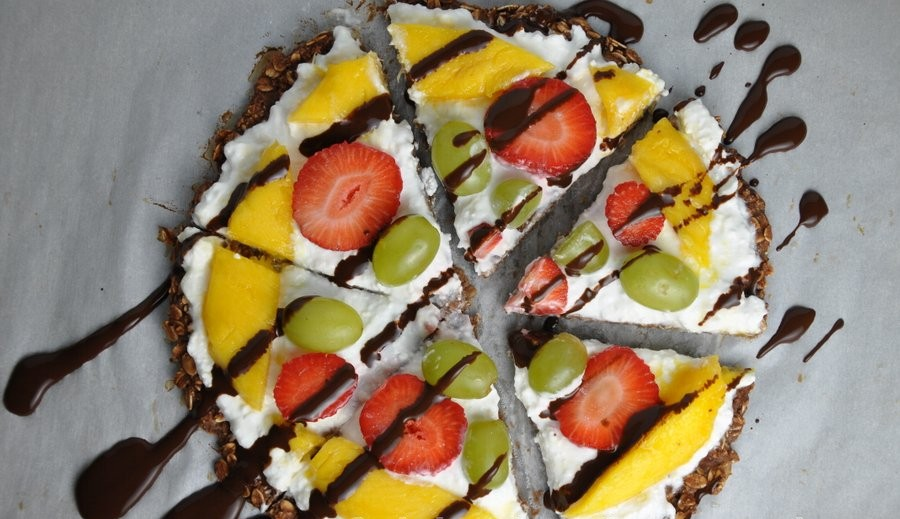

Receitas em Destaque

Bolo de chocolate low carb
Versão do bolo tradicional, mas com ingredientes que têm baixos níveis de carboidratos. Contribui com nutrientes que ajudam no funcionamento do corpo, como a inserção de proteínas, vitaminas, fibras e potássio.

Creme de abóbora saudável
Leve e nutritivo, com sabor naturalmente adocicado e rico em vitaminas A, C e potássio. De baixo teor calórico, é uma ótima opção para um almoço ou jantar equilibrado. Pode ser servido com queijo, ervas frescas ou acompanhamentos integrais, tornando-se uma refeição prática e reconfortante.

Pizza doce saudável
A massa leva apenas aveia e banana, enquanto a cobertura pode combinar iogurte e queijo branco com frutas frescas. Colorida, refrescante e fácil de preparar, pode receber ainda manteiga de amendoim, amêndoa ou castanha de caju, e proteína em pó para turbinar a receita.